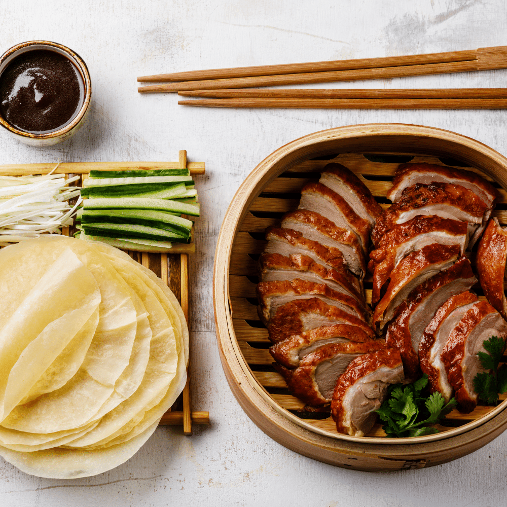

Peking Duck
Homepage

Description
Peking duck is roasted duck, usually eaten on a mandarin pancake with cucumber and/or scallions as garnish, both sliced lengthwise. The dish is also usually accompanied with hoisin sauce.
Ingredients
- 1 whole Peking Duck
- 1/4 cup honey
- 2 teaspoons soy sauce
- 2 tablespoons kosher salt
- 2 teaspoons baking powder
- 8 liquid ounces of water
Steps
- Roast duck until cooked
- Dry duck until skin crisps
- Carve duck into 1-inch width pieces
- Serve with or without garnish